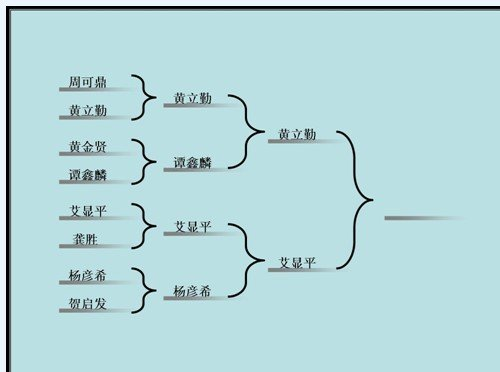
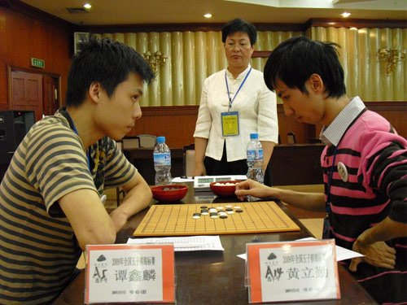
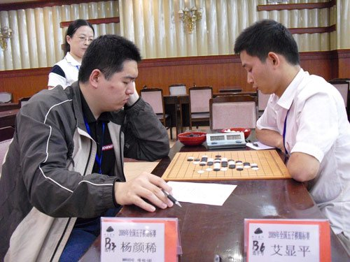
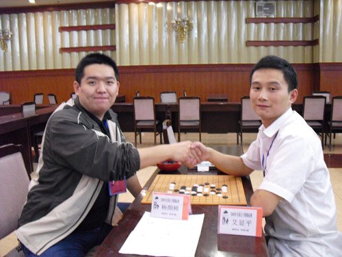
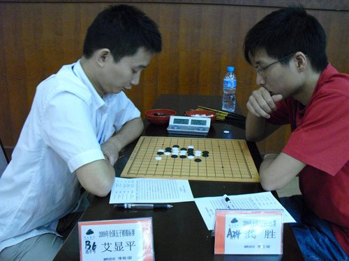
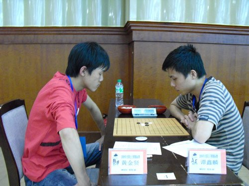
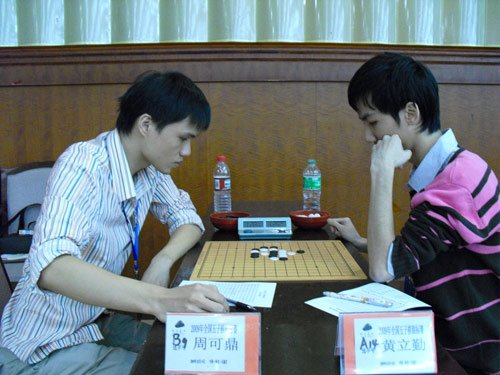
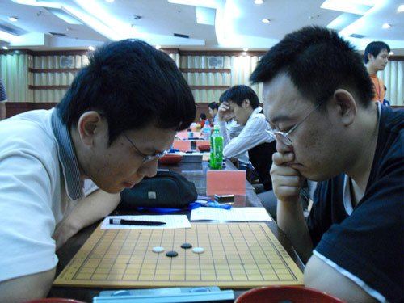

【多图】妙手杯全国五子棋赛 黄立勤艾显平会师决赛
#1 【多图】妙手杯全国五子棋赛 黄立勤艾显平会师决赛 作者：逆刃 发表时间：2009-10-5 23:01:19
腾讯体育讯 10月5日消息 在河北省石家庄市颐园宾馆进行的由国家体育总局棋牌运动管理中心主办、河北省妙手连珠五子棋俱乐部承办的“妙手杯”2009年全国五子棋锦标赛进入第三个比赛日，下午进行了4/1和2/1决赛。最终广东棋手黄立勤、湖北棋手艾显平过关斩将于明早八点进行本届大赛的决赛。

花絮：







#2 Re:【多图】妙手杯全国五子棋赛 黄立勤艾显平会师决赛 作者：下棋思思 发表时间：None
黄立勤，炫飞棋社之清缘 、疯子，来自广东。 艾显平，湖北高飞，来自湖北。
谭鑫麟，炫飞棋社之无聊、奸细，来自湖南。 杨彦希，掌棋盟之九指禅魔，来自黑龙江。
周可鼎，湖北海月，来自湖北。
by:web版  IP：
已记录
IP：
已记录
#3 Re:【多图】妙手杯全国五子棋赛 黄立勤艾显平会师决赛 作者：松痕 发表时间：2009-10-6 9:01:18
高飞胜了吧.